Getting Started¶
Research Gateway is a cloud-based solution that makes it possible for researchers and other consumers of High Performance Computing to easily access resources in the AWS cloud. RLCatalyst Research Gateway is designed for simplicity and you can get started very quickly. You can access this product either as a hosted SaaS product or as an Enterprise product.
If you are using the hosted version, you will be provided a public URL to which you can navigate using your browser. You will also be provided with the credentials for the Administrator user.
If you are using the Enterprise version, your IT department will provide you a URL to access the product. You can set up an Administrator user by following the steps below.
Contents
Planning your set up¶
Setting up your RLCatalyst Research Gateway for use involves the following steps.
Users with the Administrator role can perform the steps below.
Adding Users - Users can have Administrator, Principal Investigator or Researcher roles.
Users with the Principal Investigator role can perform the steps below.
Create an Admin user¶
Get started by first creating an Admin user account for your instance of RLCatalyst Research Gateway.
Sign-In Process¶
Use details from `Appendix A`__ for User Name, Password as per password policy.
Fill the following details
Field |
Details |
|---|---|
Username |
<Username that is used for login> |
Password |
<Password for this user> |
Click on the “Sign-In“ button. We can log in successfully.

Forgot Password¶
A user sees a “Forgot Password” link on the login screen which is under the “Sign In” button.
On clicking the link the user is navigated to the reset password screen.

Fill the following details
Field |
Details |
|---|---|
Username |
<Username that is used for login> |
E-mail address |
<Registered Email ID> |
Click on “Send Resend link” button. If the provided details are valid, he will get a verification link that has been sent to his email to reset the password. On clicking the link in the email, the user is prompted to change password screen.

The password change is either successful or unsuccessful (this will be like verification success and error screens). The user is then redirected back to the login screen.


Sign-Up process¶
To sign-up as a new user, click on the “Sign-up for a new account “ button on the Sign-in page.
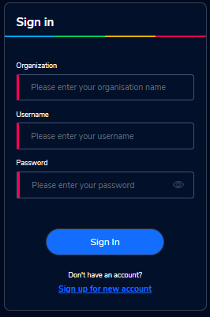Fill the following details:
Field |
Details |
|---|---|
Organization Name |
<Name of the Organization> |
Username |
<Username that is used for login> |
E-mail address |
<Registered Email ID> |
Password |
<Password> - Choose a password that conforms to the password policy. |
{kind=link}
Click on the “Sign Up” button. You will see a success message and verification email has been sent to the email address registered. Check the verification email delivered to the registered email address & click on the verification link to activate the account.

On successful validation, users will be allowed to login into the Research Gateway.
Adding Organizational Units¶
To plan the creation of a new Organization, use the planning sheet in `Appendix A`__ to collect all the information required upfront. Login into the Research Gateway. User landed to the main dashboard.

Click on the “+Add New” icon which is at the top right corner. Organization form is opened.
Field |
Details |
|---|---|
Organization Name |
<Name of the Organization> |
Organization Description |
<Description> |
Account ID |
<Select ID> [Multiple AWS accounts to be linked.Here we have a list] |
Principal |
<Select Principal ID > [Select from the list one or more users with the Principal Investigator role] |
Click on the “Add Organization” button. The new organizational unit should be added successfully.
NOTE:We are selecting a specific AWS account when adding new organization. This links the account to organizations. The organization form allows multiple Account IDs and multi-select on the Principal Investigators list.
The Organizations page of the Research Gateway lists all the existing organizational units created, with some details of each organization displayed on the card. Clicking on a specific organization shall lead to “View Organization Details” window .

Adding an AWS account to use in a project¶
Login into the Research Gateway. Click on dropdown bar which is above the header. Choose the “Settings” option
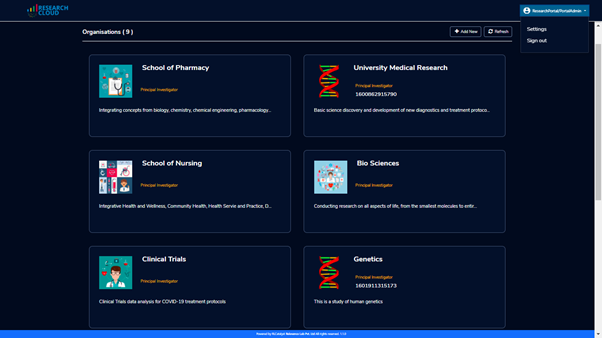Click on the “+Add New” button. Provider settings page is opened.
 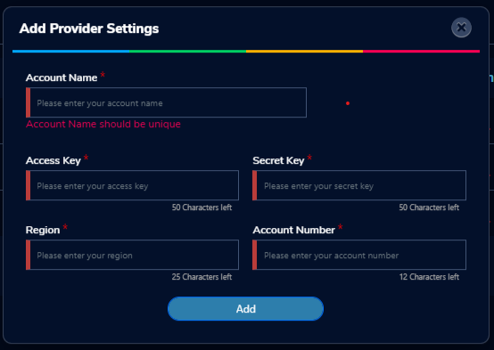
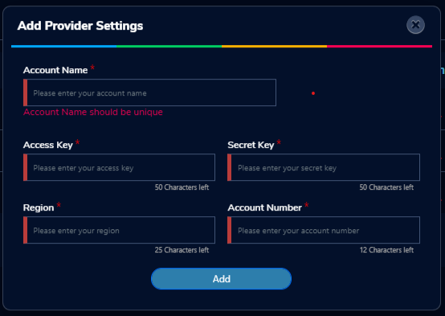
Fill the following details
Attribute |
Details |
|---|---|
Account Name |
<Account Name> |
Account Key |
<Account Key> |
Secret Key |
<Secret Key> |
Region |
<Region> |
Account Number |
<AWS Account Number> |
Click on the “Add” button. AWS account was added successfully and will show in the table of providers in the Provider Settings page.
On each line item there is a contextual menu. Through this we can edit, delete or sync the account.
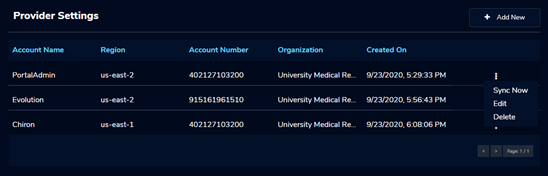Click on the 3-dotted icon which is available at the right side of the account details page and select “Edit” option. Provider settings page is opened. Update the fields and click on “Add”. Provider setting is updated successfully.
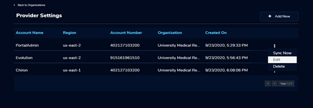
Click on the 3-dotted icon which is available at the right side of the account details page and choose “Delete” option. A confirmation dialog box is opened. On confirmation the account will be deleted. You can only delete provider settings that are not linked to any project or Organization.
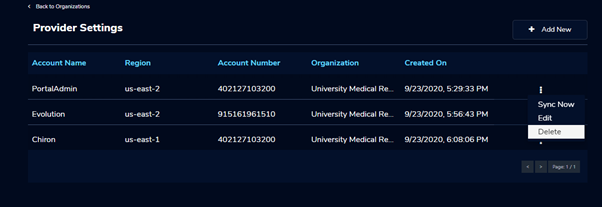Research Gateway works in conjunction with AWS Service Catalog. To synchronize the Service Catalog to your project, select the Product Sync option. Click on the “Sync Now” button. Once the synchronization is complete you should see the “Sync completed” message.
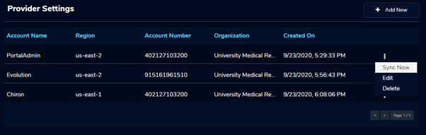 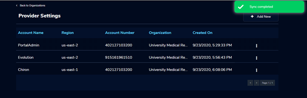Adding a new project¶
Login to the Research Gateway as a Principal Investigator. Click on the “+Add New” button. Project application form is opened.
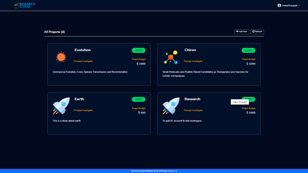 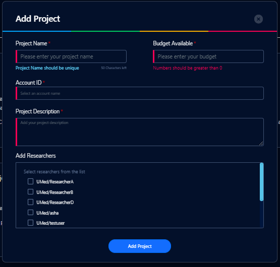Fill in the following details
Attribute |
Details |
|---|---|
Project Name |
<Project Name> |
Budget Available |
<Budget to allocate to this project (cumulative)> |
Account ID |
<Account ID> |
Project Description |
<Description about the project> |
Add Researchers |
<Select researchers from the list> |
Click on the “Add Project” button. Added a new project successfully.
Note:When adding a project we are passing researcher information. Through this we are linking researchers to the project. The project form allows multi-select addition of researchers while creating a project.
Note: The project is independent of the researcher. We can create an empty project and add researchers later
My Projects page of the Research Gateway lists all the existing projects created along with other details. Clicking on a specific project shall leads to a project details page.